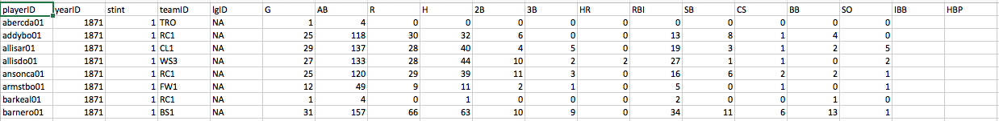
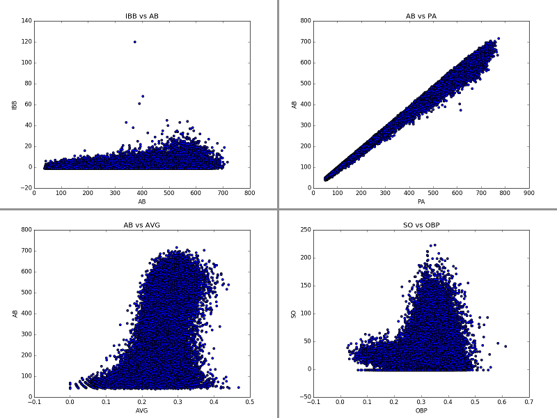

Will Joey Votto Make the Hall of Fame?
November 21, 2016 - Python and SQLOf the many things I love about baseball, perhaps the part I find most beautiful is the ability to sum the current situation of the game in one sentence. "Top of the 9th, 3 to 2 for the home team, 2 balls and no strikes, man on first." That tells you literally everything you need to know about the game (assuming you know the lingo), and that's a consequence of an extremely "state" driven game. Much like atoms, if you know the state of a few factorized portions of the game, you know the current state of the whole game. This leads to my absolute favorite part of baseball: if everything is a state, then every state can be given statistics. In practicum, that means there are statistics for everything. Want to know how many of a particular players hits are doubles? We have the stats. Want to know how often a player tries to steal a base and gets caught? We have hte stats. You get the idea.
At present in the MLB culture, the "stat heads" are overtaking the old-guard that believes statistics are hokum. Instead, data is revolutionizing the game as teams are using all of the data to make predictions on where a player is most likely to hit the ball or what type of pitch he's least likely to hit. Perhaps unsurprisingly, this is working. Just ask the 2016 Chicago Cubs. This battle between stats and the old-guard is perhaps most clear when people talk about the hall of fame. Stat-guys are pointing to players like my favorite player, Joey Votto of the Cincinnati Reds, and saying, "he contributes more increase in winning percentage to his team than any other player." That's a pretty dense statement with a lot of calculations hidden behind it, for example how much is getting on base worth towards winning the game? These calculations are a discussion for another time, because the point I want to make is, many of the baseball writers and announcers that are "anti-stats" are pushing back on the idea that Joey Votto belongs in the hall of fame.
So I thought to myself, why not see what the data says? We have this beautiful game, with tons of data recorded for every player. We have a list of who made the hall of fame. I bet I can merge these two together and predict whether Joey Votto has a shot at the hall of fame. Better yet, I can make predictions on who, among active or recently retired players, is likely to get the nod. So let's talk techniques. The first thing to do is get some data.
Wonderfully enough, it's not too hard to find a database. After some searching about the web, I found a database here. Inside is the statistics for every person who's ever had an at-bat in a major league game since 1871. So let's have a look at the data:  There are a few things to unpack here. First, everyone is identified by an ID code word instead of their name. Second, we see that most of the stats are the typical stats but they're broken down by player and season, so our code must handle that. Third, we see that there are some blanks in the data, especially in the ye olde player section where the information just wasn't recorded at the time.
The first thing to do is plot the data and have a look for problems within the data set. In order for Python to handle this, all of the blank spots within the data have to be filled in. In this case, I filled them with -999 so that they would stick out on the plots. Shown below, I've plotted the 2D correlations between the different types of data. This serves two purposes: 1) outliers will show up along each axis and 2) it allows me to identify any information that is one-to-one correlated (redundant information) such that in the future I'm not double counting a type of statistic. The code I wrote actually produces almost 300 plots showing the correlations between each statistics with each other statistic, a few interesting examples are shown below (with the -999 outliers removed for viewing purposes).  On the top left we see data that shows almost no correlations. Someone with 100 AB in a season is just as likely to have 5 IBB (intentional walks) as someone with 400 AB in a season. We also see that there On the top right we see data that is exteremely correlated, that's because these are two numbers that measure how many times a player comes to the plate to face a pitcher, the only difference is whether to include certain types of events in the counting. However, these events are fairly rare. Thus, we don't really need to include both of these features in our analysis (at least not necessarily, we can try with and without and if we find the data needs to be simplified, this is a place to cut a feature). The bottom left is perhaps the most interesting plot to consider. We see that there is a very loose correlations between at-bats and average (with average being one of the most commonly used metrics for discussing a baseball players greatness). However, that correlation doesn't really start until over 100 ABs. That's because baseball is a game of failure. The greatest hitters of all time still fail 70% of the time. That means a large sample is necessary to truly find out how good a player is. With only 100 ABs, we still can't tell much about a hitter. Thus, for this analysis, we are going to place a requirement that more than 100 ABs occur in a season for the season to be considered. Finally, on the bottom right I've shown a plot that shows a double band structure. This is a unique looking plot that shows us there isn't much of a correlations between OBP (on-base percentage) and SO (strike outs), but there does seem clearly be two types of players, those with low OBP and relatively low strike outs, and "the rest." After checking into it, the lower band tends to be players with only a few ABs.
For the sake of brevity, let's jump to the interesting part - machine learning. For each player I created a Python dictionary that holds all of his stats, separated by seasons, and whether or not he has made the hall of fame. I removed pitchers from the data, because pitchers make it to the hall of fame for their arm and not their bats, so they would skew the results. I then separated the players into three groups: "Eligible and retired long enough to have been considered for the hall of fame", "Not yet retired or not retired long enough to be eligible", and "ineligible" based on the Hall of Fame requirements for entry. From this, I took the first group and split it further, placing 70% into a "training" data set for my machine learning algorithms and 30% into a "testing" group so I can see how well my algorithm can do at determining if a player actually makes the hall of fame. Then, after testing the algorithm I can apply it to the group of "modern players" that we want to make predictions about.
This is simple enough in theory, however there are some subtleties I'd like to discuss. First, only ~2% of players that are eligible make the hall of fame, so this data is dominated by "no" answers to the question "did he make the hall of fame?" That means the algoritmh would be ~98% accurate if it just always said no. It also means we need to be careful about our training data. The predictions are going to vary greatly if the only person in the training data that makes the hall of fame is Babe Ruth vs Barry Larkin. To overcome this, I've used a bootstrap method combined with a method of forcing 70% of "yes's" and 70% of "no's" to go into the training data individually instead of just 70% of all players. This means my training data will always have yes's and no's to train on. For the bootstrap method, I've done a method of sampling the data to build the training set many 1000s of times and then constructing a probability of making the hall of fame based on all of these samples. This removes bias based on what players the data is trained with.
With just these assumptions, we can apply various machine learning algorithms and look at the probability of each player making the hall of fame. For each iteration of the bootstrap, we can plot the probability that a player makes the hall of fame. Organized from low-to-high probability, that gives a plot like this.

Another thing to consider in the model is whether we want to just look at accrued stats or rate of accrual. In my first model, I naively just summed up each players stats and tried to make a prediction. However, that heavily biases the result against players that have only been in the league a few years. It's simply not feasible that a player with only 5 years in the league will have the accrued stats of a hall of famer with 12 years in the league. Thus, I switched to a model that accounts for the rate of accrual for a player, calculating each players "hits/season" or "walks/season." Then I re-trained the model.
Finally, we need to consider which model to use. For all models, it's best to regularize the data such that the mean value for each feature is 0 and the standard deviation is 1. This regularization is applied to the data for all models, in order to obey the "rules" of the models. Then I tried many different models: logistic regression, decisions trees, boosted decision trees, and random forest. I found the random forest to give the most accurate results in the testing data out of these models, so the results shown here are from that model.
| First Name | Last Name | HOF Probability |
|---|---|---|
| Scott | Rolen | 0.004 |
| Paul | Konerko | 0.104 |
| A.J. | Pollock | 0.001 |
| Aramis | Ramirez | 0.006 |
| Lance | Berkman | 0.768 |
| Justin | Upton | 0.004 |
| Ichiro | Suzuki | 1.0 |
| Ryan | Braun | 0.934 |
| Jose | Bautista | 0.174 |
| Vladimir | Guerrero | 0.998 |
| Johnny | Damon | 0.611 |
| Mark | Teixeira | 0.308 |
| Andre | Ethier | 0.002 |
| Derek | Jeter | 1.0 |
| Prince | Fielder | 0.638 |
| Adrian | Gonzalez | 0.812 |
| Dustin | Pedroia | 0.882 |
| Justin | Morneau | 0.005 |
| Carlos | Santana | 0.002 |
| Michael | Young | 0.995 |
| Ian | Kinsler | 0.851 |
| Dan | Uggla | 0.033 |
| Chris | Davis | 0.007 |
| Brian | McCann | 0.002 |
| Adam | Jones | 0.885 |
| Adam | Dunn | 0.529 |
| Nick | Swisher | 0.001 |
| Jose | Altuve | 0.168 |
| Robinson | Cano | 0.997 |
| Dexter | Fowler | 0.003 |
| Albert | Pujols | 0.965 |
| Yunel | Escobar | 0.001 |
| Victor | Martinez | 0.055 |
| Freddie | Freeman | 0.61 |
| Jimmy | Rollins | 0.95 |
| Billy | Butler | 0.599 |
| Hanley | Ramirez | 0.054 |
| Bobby | Abreu | 0.239 |
| Mark | Reynolds | 0.002 |
| Chris | Carter | 0.009 |
| Mark | Trumbo | 0.005 |
| Edgar | Renteria | 0.014 |
| Elvis | Andrus | 0.955 |
| Matt | Holliday | 0.93 |
| Chipper | Jones | 0.975 |
| Jason | Giambi | 0.122 |
| Jason | Heyward | 0.001 |
| Josh | Hamilton | 0.002 |
| Jose | Reyes | 0.015 |
| Joey | Votto | 0.93 |
| Travis | Hafner | 0.002 |
| Evan | Longoria | 0.464 |
| Andrew | McCutchen | 0.939 |
| Eric | Hosmer | 0.669 |
| Curtis | Granderson | 0.266 |
| David | Wright | 0.139 |
| Alex | Rodriguez | 0.727 |
| Nelson | Cruz | 0.001 |
| Torii | Hunter | 0.097 |
| Adrian | Beltre | 0.463 |
| Mike | Trout | 0.809 |
| Bryce | Harper | 0.045 |
| Carlos | Beltran | 0.008 |
| Jim | Thome | 0.34 |
| Pat | Burrell | 0.017 |
| Nick | Markakis | 0.961 |
| Adam | LaRoche | 0.001 |
| Magglio | Ordonez | 0.845 |
| Josh | Donaldson | 0.479 |
| Brandon | Phillips | 0.628 |
| Giancarlo | Stanton | 0.181 |
| Kevin | Kouzmanoff | 0.002 |
| Jay | Bruce | 0.152 |
| Alexei | Ramirez | 0.432 |
| Carlos | Pena | 0.02 |
| Carlos | Lee | 0.607 |
| Matt | Kemp | 0.002 |
| Austin | Jackson | 0.001 |
| Anthony | Rizzo | 0.006 |
| Paul | Goldschmidt | 0.334 |
| Alcides | Escobar | 0.001 |
| Miguel | Cabrera | 0.973 |
| Todd | Helton | 0.983 |
| Nolan | Arenado | 0.098 |
| Juan | Pierre | 0.33 |
| Buster | Posey | 0.301 |
| David | Ortiz | 0.717 |
| Vernon | Wells | 0.063 |
| Starlin | Castro | 0.536 |
| Ryan | Howard | 0.697 |
| Edwin | Encarnacion | 0.01 |
| Brian | Dozier | 0.027 |
| Hideki | Matsui | 0.006 |
| Chase | Utley | 0.004 |
| Matt | Carpenter | 0.824 |
| Ian | Desmond | 0.487 |
| Miguel | Tejada | 0.333 |
| Alfonso | Soriano | 0.074 |
| Jacoby | Ellsbury | 0.006 |
| Joe | Mauer | 0.664 |
The first, and most positive, note is that most of these players are well-known to the casual baseball fan. The algorithm is making predictions that agree with most baseball experts. For instance, Chipper Jones is widely believed to be a shoo-in for the hall of fame, and our model gives him a 98% chance of making it. The same for Derek Jeter. It also says that most of the current excellent players who are on pace to be shoo-ins, like Miguel Cabrera, Albert Pujols, have high probabilities. Perhaps even more encouraging, is that I don't see many names on here that I don't recognize (me being slightly more baseball-rabid than the normal fan). So the model is also accurately removing players that have no name recognition for being great. "Oh hey, I recognize that guy" isn't a metric I'd put on my resume, but it's definitely reassuring that the model is being successful.
I'd also like to spend a few sentence on the limitations of this model. There are many things this model doesn't account for, but the two biggest ones I think are playing position, defense (as a whole), and home-field advantage. The position a player is known for makes a big difference in the hall of fame. Someone who is an excellent shortstop will likely have a lower barrier for entrance in terms of hitting statistics than a first baseman (a position associated with power hitters). For instance Buster Posey is one of the most heralded catchers of the past generation, yet only has a 30% chance according to this model. That's because this model doesn't know he's a catcher (and one of the best defensive catchers of all time. Todd Helton is given a high probability of making the hall of fame, but the model doesn't know he played the majority of his games in Denver, where the stadium is well-known for inflating offensive numbers because the atmosphere is much thinner at 5280 ft above sea-level. These are all secondary effects that need more study, but I think they are small effects and the results of this analysis can still be quite reliable and useful.
So what does the model have to say about my man Joey Votto? It gives him a 93% chance, which puts him on par with the Albert Pujolses of the world. Frankly, that shouldn't be surprising given the excellent career that Joey Votto has had so far, but it's nice to dig in to the data and see that it's not just watching him that says he's great; he actually is on pace to sit among the legends of the game. It's also really fun and interesting to look through some of the other names that show up. Todd Helton is a great example of a forgotten great hitter; and someone that I didn't expect to find on this list, but after doing this analysis and looking into his stats, he does belong here. Ryan Howard is someone I had considered before doing this, but expected him not to make the list because he's generally seen as a massive failure. However, he's actually had an excellent career, but the tale in the media about him is that he never lived up to the huge contract he was given. There are tales like this throughout the list, and this study has shown that the media can often miss the great careers when they focus so much on building stories around players.
For future development, it would be great to add in a defensive position feature and to re-try this using a deep learning algorithm that might be able to pick out stronger correlations between multiple variables and the Hall of Fame chance. Perhaps there's a strong link between playing lots of games AND having a high OBP that is a better predictor of HOF chances. At present, this model may not make that connection reliably and a neural network might.